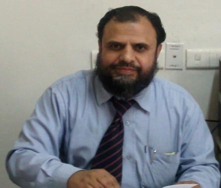

About
Our Patron's Message

• Member, 19th Law Commission of India
Our Volunteers were asked to choose any one area of operation of Vikkalp Law Society, where it was required of them to provide a minimum of two hours on at least one day of every weekend. In case of one day of a weekend, it was either chosen by them or allotted to them by a designated coordinator. “Try not to become a man of success but a man of value” – Albert Einstein.
• Member, Delhi Legal Sservices Authority
• Professor and Dean, University school of law and legal studies, GGS IP University, New Ddelhi
• Author of 13 books and 75 research papers
• Law teaching and research-29 years of experience
• Panellist on Rajya Sabha and Lok Sabha TV and All India Radio
“The happiest occasion for a teacher is the moment when his students do what he teaches them to contribute to the society in terms of knowledge-creation, rendering a helping hand in necessity, promoting better citizenship by developing in them globally matchable competitive potential and to work for the same selflessly spending their pocket money.
Such a group of students came forward in the University School of Law and Legal Studies, GGS IP University, Delhi and are initiating a socially most relevant action of creating legal awareness among the masses to enable them to live with dignity as well informed and potential members of human brotherhood.
I cherish these moments of appreciation for students as one of the best achievements of life and pray for their success in this venture with endurance.
I feel that these students may face some bottle-necks in carrying forward this mission but at the same time I firmly believe that their sincerity and commitment to the cause would surely help them to stand the test of time. Somehow this prophetic task has to be performed and there is no dearth of good souls in India to join and add to their strength”
Prof M Afzal Wani.
Dean, University School of law and legal studies,
GGS IP University, New Delhi-78
Our Stratergy
Volunteers were given a syllabus plan which was further divided into units and they were asked to teach according to a child’s way of understanding. This, according to the syllabus plan, could be either through listening or seeing, through speaking or through writing.
The Volunteers were asked to make sure that all three of them were covered, which could be done, also according to the syllabus plan, by speaking clearly and in a simple language, referring to visual aids or gestures, writing on the board, making them repeat out loud or by writing the same in their notebooks.
After the commencement of the given units, there were revision tests and appropriate rewards were given to the students who passed to the next level.
Volunteers were also asked to approach our coordinators with new teaching methods and innovative activities that might come up during the teaching sessions.